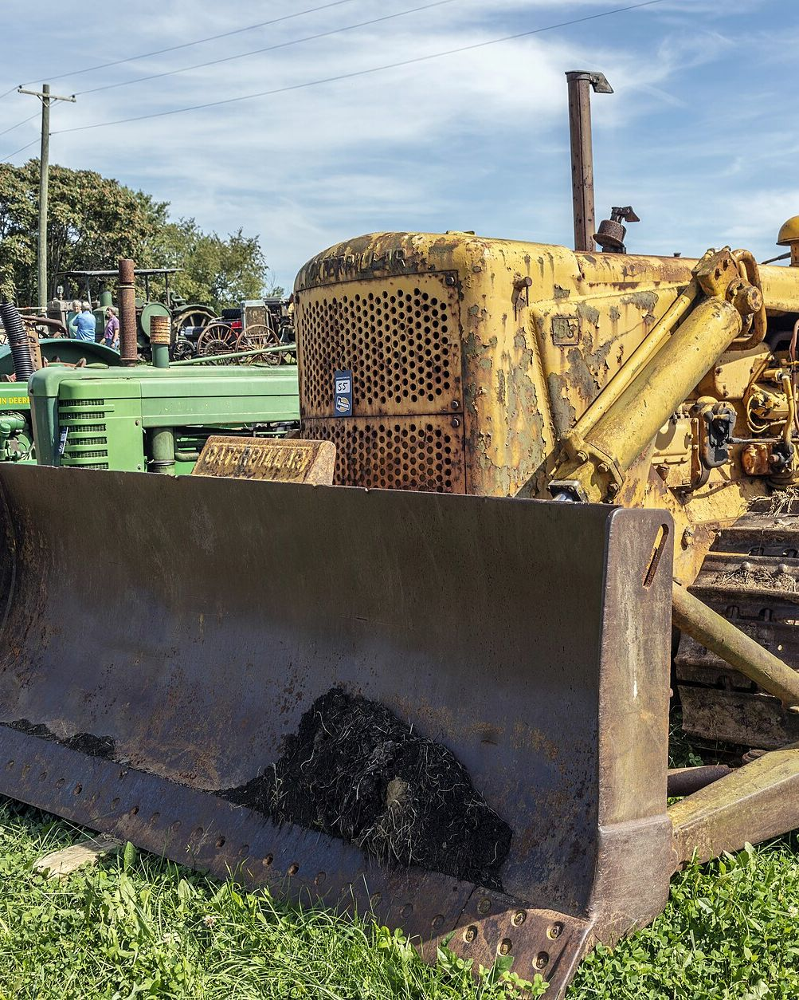
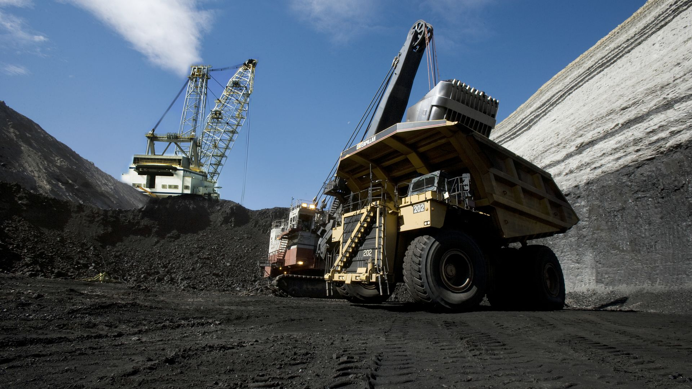
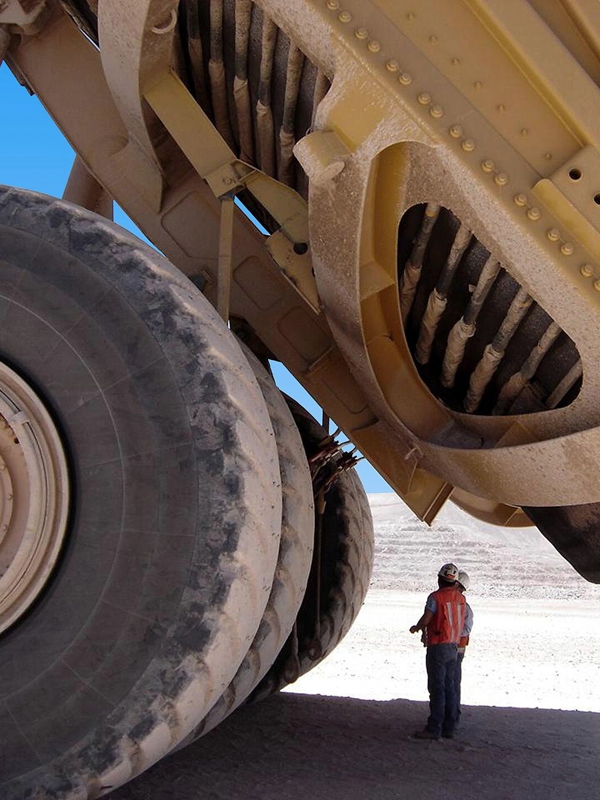
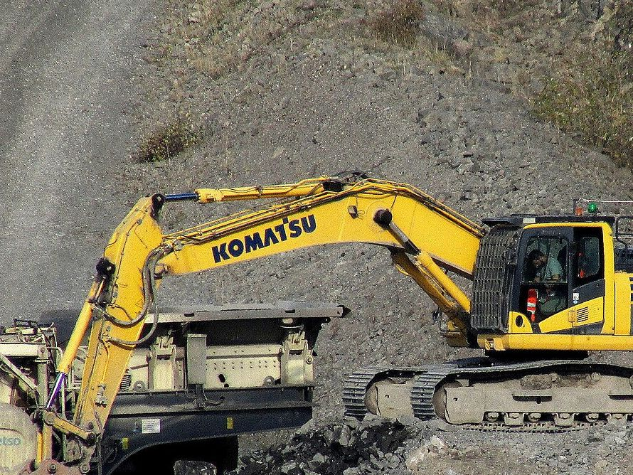
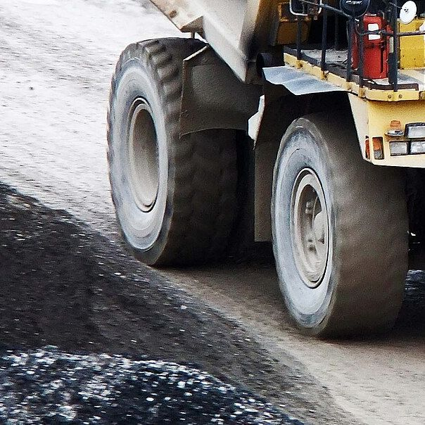
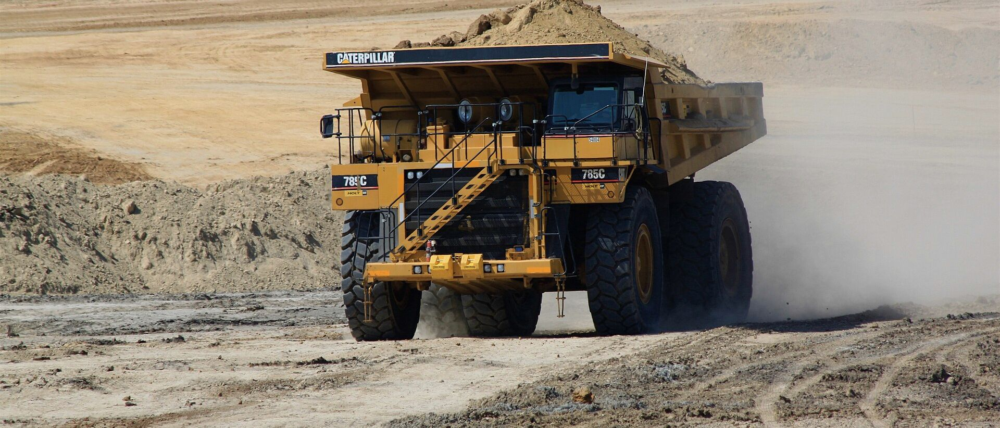
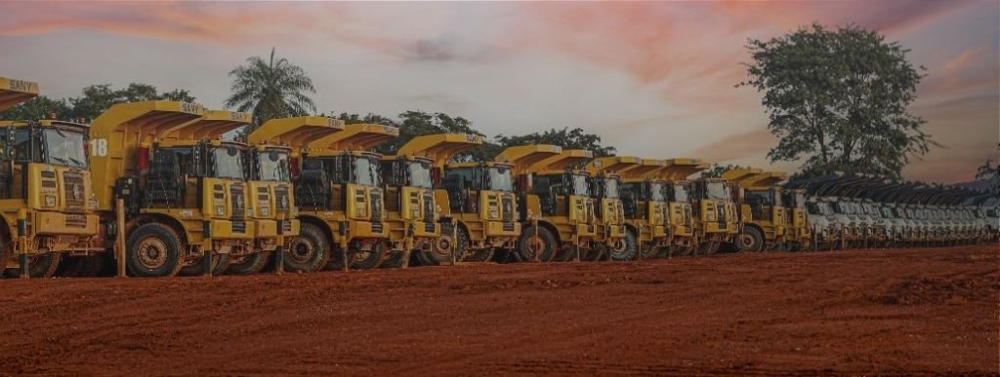
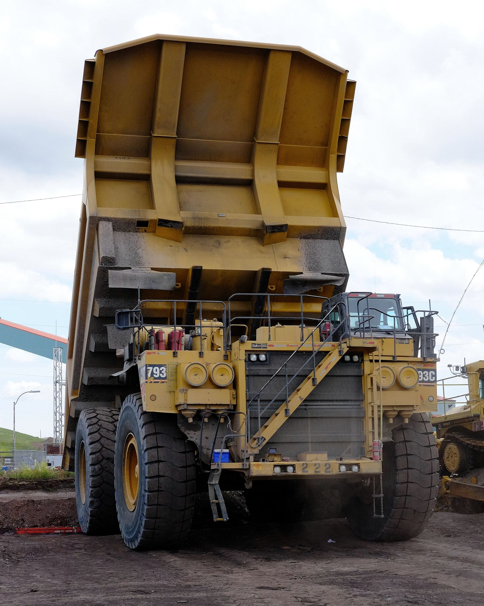

Um dos sócios compra um trator de esteira para prestar serviço nas lavouras de café de Castelo, no sul do Espírito Santo.Foto ilustrativa (Acroterion, CC BY-SA 4.0). A foto de arquivo da Zocar entra aqui.
Prévia de demonstração. Unidades, códigos e contatos são fictícios.

Linha amarela e caminhões para mineração, pedreiras e obras. Desde 1980, do interior do Espírito Santo ao Rio de Janeiro.
Foto ilustrativa: Peabody Energy, CC BY 3.0

A escala
Caminhões fora de estrada, basculantes, escavadeiras, pás carregadeiras e tratores de esteira. Equipamentos da linha amarela para quem move terra, brita e minério todos os dias.


Fotos ilustrativas: Duratray, Derek Harper, Martin Cooper
O pátio
Cada unidade tem um código. Abra o dossiê para ver os dados, marque as que interessam e envie uma só cotação.

Foi assim que a Zocar começou nos anos 80, em Castelo/ES: comprava máquinas usadas, reformava e alugava.
Foto ilustrativa: Roy Luck, CC BY 2.0

Um dos sócios compra um trator de esteira para prestar serviço nas lavouras de café de Castelo, no sul do Espírito Santo.Foto ilustrativa (Acroterion, CC BY-SA 4.0). A foto de arquivo da Zocar entra aqui.
Depois de anos comprando, reformando e alugando máquinas, a família leva o negócio para o Rio de Janeiro, onde está até hoje.

Matriz no Rio de Janeiro, filial em Castelo/ES e parceria com a MAN Caminhões.
Foto: acervo Zocar RioCertificações
 ISO 9001Gestão da qualidade
ISO 9001Gestão da qualidade ISO 14001Gestão ambiental
ISO 14001Gestão ambiental ISO 45001Saúde e segurança no trabalho
ISO 45001Saúde e segurança no trabalho
Cotação
Cotação